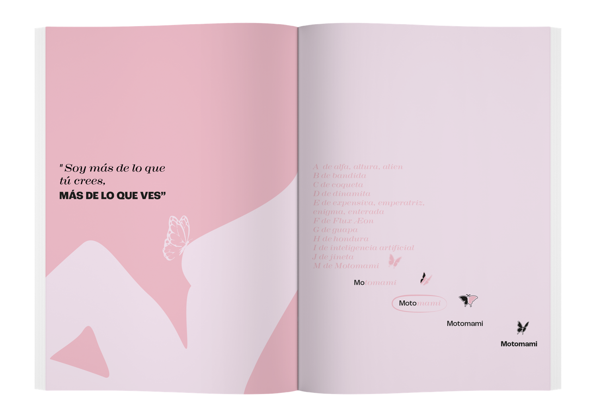

Fanzine Motomami
Este proyecto es un fanzine editorial que explora la dualidad identitaria y sonora de Rosalía a partir del universo conceptual de Motomami, entendiendo a la artista como un cuerpo contradictorio, múltiple y en constante transformación. A través de textos, citas y recursos gráficos, el fanzine aborda la tensión entre fuerza y vulnerabilidad, tradición y experimentación, delicadeza e irreverencia, reflejando cómo esa dualidad se manifiesta tanto en su música como en su construcción de lo femenino. La estética visual acompaña este concepto mediante una paleta dominada por rosas suaves y negros profundos, ilustraciones de siluetas femeninas fragmentadas, mariposas como símbolo de metamorfosis y una tipografía que alterna entre lo elegante y lo contundente. La composición juega con el vacío, el contraste y la superposición, reforzando la idea de una identidad que no es fija ni única, sino cambiante, híbrida y poderosa.
3 año - Laboratorio de diseño 5